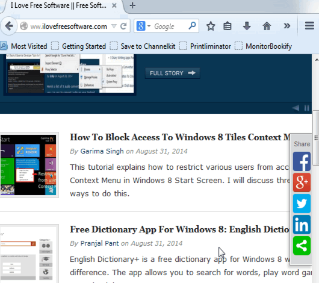

Як створювати гіперпосилання?

Щось поки що не зрозуміло... Може подивимось на практиці?
Для створення гіперпосиланнь на інші сторінки використовують тег <a>. Він рядковий, тобто не робить ніяких відступів.
Представимо що ми робимо сайт піцерії і на головній у нас є текст:
На цьому сайті ви можете ознайомитись з нашим меню
Чому б не зробити тут гіперпосилання на сторінку з меню? Давайте зробимо гіперпосиланням
слово меню, щоб відвідувач розумів на яку сторінку він перейде.

Я сподіваюсь, Ви ж повторюєте?
Для цього давайте створемо сторінку index.html в блокноті. Пишемо там це речення, та беремо меню у тег <a>. Тепер ваше речення має виглядати так: На цьому сайті ви можете ознайомитись з нашим <a>меню</a>
Щось це не схоже на гіперпосилання, текст зовсім не змінився...
Чудово! Тепер відкриємо у браузері. Тепер наше речення має виглядати так:
На цьому сайті ви можете ознайомитись з нашим меню
А й справді, це ще не гіперпосилання, адже ми забули дуже важливий атрибут,
який вказує куди по цьому посилання ми перейдемо. Цей атрибут називається
href, а адреcа на яку ми перейдемо вказується так:
href="адреса".
Тож відкриваємо блокнот і
дописуємо у <a> атрибут href з адресою на сторінку menu.html, наприклад.
Тепер код має виглядати ось так: На цьому сайті ви можете ознайомитись з нашим <a href="menu.html">меню</a>

О, так набагато краще!
Перезавантажуємо сторінку у браузері і маємо На цьому сайті ви можете ознайомитись з нашим меню
Це гіперпосилання вас, звичайно, нікуди не приведе (Точніше приведе на сторінку "Файл не знайдено"), але не хвилюйтесь, це лише тому що в нас нема сторінки під назвою menu.html
.
Тож перше завдання:
Створіть HTML сторінку під назвою menu.html (обов'язково в одній папці з index.html, з яким ми щойно працювали) та створіть на ній гіперпосилання на index.html
Додаткові атрибути
title
Отже, ми навчилися створювати гіперпосилання на інші сторінки за допомогою тега <a> та атрибуту href. Але це далеко не все що можна робити з гіперпосиланнями. Як щодо створення спливаючої підказки при наведенні на гіперпосилання?
Для створення спливаючої підказки використовують атрибут title. Повний вигляд: title="Текст вспливаючої підказки"
На цьому сайті ви можете ознайомитись з нашим <a href="menu.html" title="Детальше про меню">меню</a>
Ось як це має виглядати (наведіть вказівник миші на гіперпосилання щоб побачити вспливаючу підказку):
На цьому сайті ви можете ознайомитись з нашим меню
<a href="menu.html" title="Детальше про меню">меню</a> - правильно
<a title="Детальше про меню" href="menu.html">меню</a> - правильно
<a href="menu.html", title="Детальше про меню">меню</a> - неправильно
target
Перейдіть за посиланням яке ви створювали на початку уроку. Зверніть увагу, чи з'являється нова вкладка, і ви помітите що сторінка відкривається у тій же вкладці де була минула.
Але це не завжди зручно. Наприклад, коли ми купуємо щось в інтернеті треба заповнити форму, але буває що нам треба повернутися на сторінку з товарами. Якщо форма для оформлення покупки відкривається у тій же вкладці що й товари, то при поверненні на минулу сторінку прийдеться заповнювати форму спочатку. Тож краще було б якщо сторінка з формою відкривалася у новому вікні.
Як це зробити ми зараз розповімо.
Атрибут target відповідає за вкладку в якії має відкритись сторінка (у тій же або новій).
Є 3 значення target: "_blank", "_self" і "довільне ім'я"
target="_self" стоїть по замовчуванню. Він відкриває сторінку у тому ж вікні де було гіперпосилання на неї.
Якщо ви хочете, щоб сторінка відкривалась у новому вікні, викорсистовуйте target="_blank". Він створює нове вікно при кожному натисканні на гіперпосилання.
target="ім'я сторінки" також відкриває сторінку у новому вікні, але при наступному натисканні на гіперпосилання ви не створює ще одне вікно як "_blank", а переносить нас на вже створене.
Давайте подивимось на прикладі (Щоб подивитись принцип роботи target, пропоную робити гыперпосилання на пусту сторінку about:blank, але ви можете використовувати будь яку іншу існуючу сторінку):
| "_self" | <a href="about:blank" target="_self">гіперпосилання</a> | гіперпосилання |
|---|---|---|
| "_blank" | <a href="about:blank" target="_blank">гіперпосилання</a> | гіперпосилання |
| "довільне ім'я" | <a href="about:blank" target="сторінка">гіперпосилання</a> | гіперпосилання |